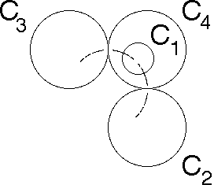
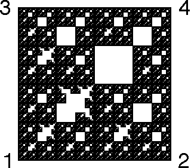
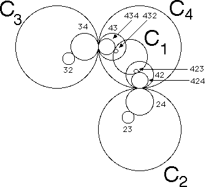
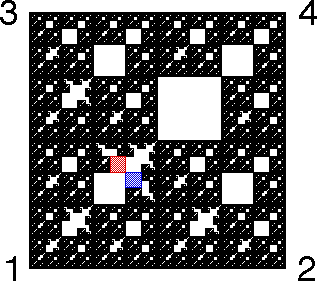

Now we expand the circle C1 and note how the driven IFS changes.
As C1 expands to intersect 43 and 42, we expect some additional combinations of inversions to be forbidden.
|  |  |
To understand this picture, note C1 is tangent to
|  |  |
Consequently, the combination
Similarly,
In the driven IFS, the forbidden squares 1432 (red) and 1423 (blue) are shaded.
Of course, any address containing these is forbidden.
Return to circle inversion driven IFS.